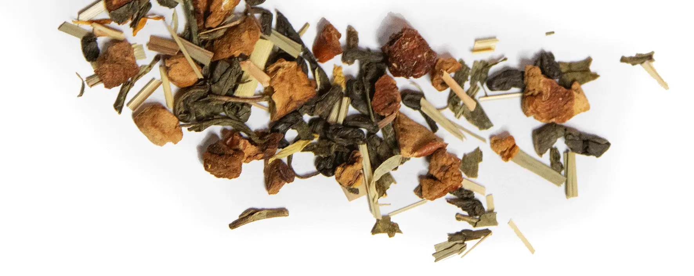
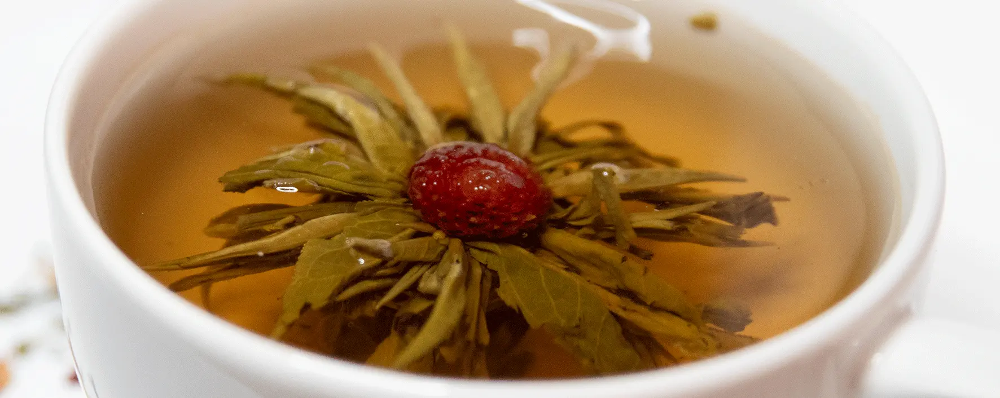

AFSLAPNING
Nogle typer te, såsom kamille, mynte og lavendel urtete, har naturlige beroligende egenskaber,
der kan hjælpe med at reducere stress, fremme afslapning og forbedre din søvn.
Du kan læse mere om disse tesorter her:
FOKUS
Te kan være en nyttig måde at forbedre fokus og koncentration på grund af de forskellige fordele,
som visse typer te kan tilbyde. Dette er på grund af téens koffeinindhold og L-theanin hvilket
hjælper mod stress uden at forårsage døsighed. Gode téer til dette formål er grøn te, sort te, og matcha.
Du kan læse mere om disse tesorter her:
MAVEBALANCE
Visse urteteer, som ingefær og pebermynte, kan hjælpe med at lindre fordøjelsesbesvær, kvalme og oppustethed.
Disse urter har egenskaber, der kan berolige maven og fremme en sund fordøjelse.
Du kan læse mere om disse tesorter her:
